ggplot2
Paul Esker; Mauricio Serrano; Felipe Dalla Lana
3/1/2021
Introduction
In the last class we looked at R through the lens of basic concepts
all the way to presenting an introduction to data wrangling. The
material for the current class focuses on communicating results using
graphical methods. For this, we will use the ggplot2
package. ggplot2 is the most popular and robust package for
data visualization. There are plenty of resources on two packages, but a
good start is with the package website and
a very useful cheat
sheet. Most of the popularity with ggplot2 is because
its quality and numerous types of plot that can render.
](figures/intro_r/ggplot2_masterpiece.png)
{kind=link}
How is ggplot2 structured? This packaged was inspired by
the book The
Grammar of Graphics, by Leland Wilkinson. Specifically, the strength
with ggplot2 is a function of building a graphic by
breaking down the plot in different parts, which allows the end-user the
flexibility to build the graphic to their desired liking and goal.
The most important components of ggplot2 graphs are:
- Geometric Elements
- Aesthetics
- Scales
- Facet
- Labels
- Themes
In the next sections, we will explore these different components in
more detail. Each section will add one more component to our base graph.
It is important to mention that we will not cover all the different
types of plots that you can do it with ggplot2, first
because there are many different types, and second, because extensions
for new types of graphics are created frequently. This lesson should
“arm” you with an excellent introduction to be able to explore other
graphical tools available in this package and R in general.
Hands on
First, lets start with the data the we used last class.
data_demo <- readr::read_csv("data/intro_r/data_demo.csv")## Rows: 64 Columns: 9
## ── Column specification ────────────────────────────────────────────────────────
## Delimiter: ","
## chr (2): trt, var
## dbl (7): plot, blk, sev, inc, yld, don, fdk
##
## ℹ Use `spec()` to retrieve the full column specification for this data.
## ℹ Specify the column types or set `show_col_types = FALSE` to quiet this message.data_demo## # A tibble: 64 × 9
## plot trt var blk sev inc yld don fdk
## <dbl> <chr> <chr> <dbl> <dbl> <dbl> <dbl> <dbl> <dbl>
## 1 107 A R 1 1.95 35 86.6 0.11 4
## 2 109 A R 1 1.2 20 80.3 0.15 4
## 3 204 A R 2 0.9 20 81.1 0 42
## 4 214 A R 2 4.05 50 85.1 0.07 25
## 5 305 A R 3 1.1 15 84.8 0 29
## 6 316 A R 3 1.8 10 93.7 0 24
## 7 406 A R 4 1.4 25 84.5 0.06 37
## 8 412 A R 4 0.45 10 84.8 0.07 42
## 9 108 A S 1 13.3 55 92.3 0.42 NA
## 10 110 A S 1 12.3 50 103. 0.26 NA
## # … with 54 more rows
## # ℹ Use `print(n = ...)` to see more rowsEvery ggplot2 plot starts with the function,
ggplot().
library(tidyverse) # load ggplot2 and other tidyverse package
ggplot()
Note: when you do not inform ggplot2 of what data you
want plot, the function ggplot() will only print a gray
panel.
This is where data and aesthetics enter the discussion.
ggplot(data = data_demo, aes(x = trt, y = yld)) # aes is short for aesthetics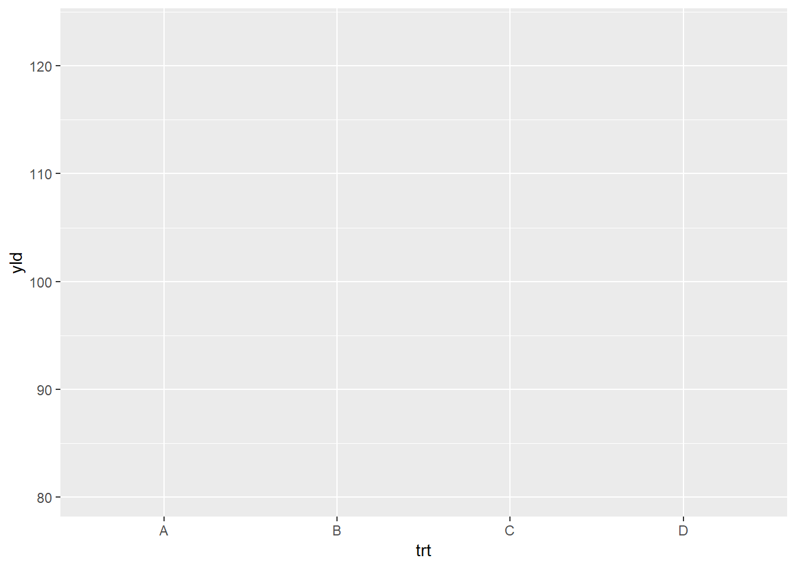
So far, we have only told ggplot that our graphic will
have information about treatments values in the x-axis and the variable
yield on the y-axis. However, there are plenty of plots that could be
created with quantitative and qualitative variables, for example,
boxplots or line plots.
At this point, what we will do in the next steps is to indicate to R exactly what type of plot we want to create. This is where information about the geometric elements are considered.
Geometric elements
ggplot2 native
geom_*()
In this step, we now indicate to R the specific type of graphic we are going to create, for example, line, points, histogram, etc.
Below is an example plotting the points (or raw data) using
geom_point().
ggplot(data = data_demo, aes(x = trt, y = yld)) + # Note: we use the "+" sign to connect lines of code
geom_point()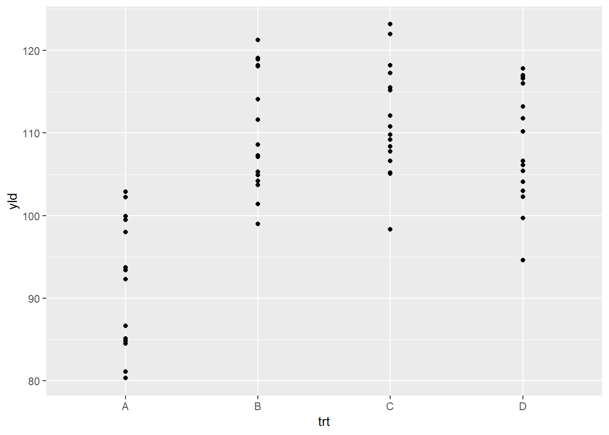
Because many of the points overlap, a better option for this plot
will be the geom_jitter(), which adds a small amount of
random variation to the location of each data observation.
ggplot(data = data_demo, aes(x = trt, y = yld)) +
geom_jitter()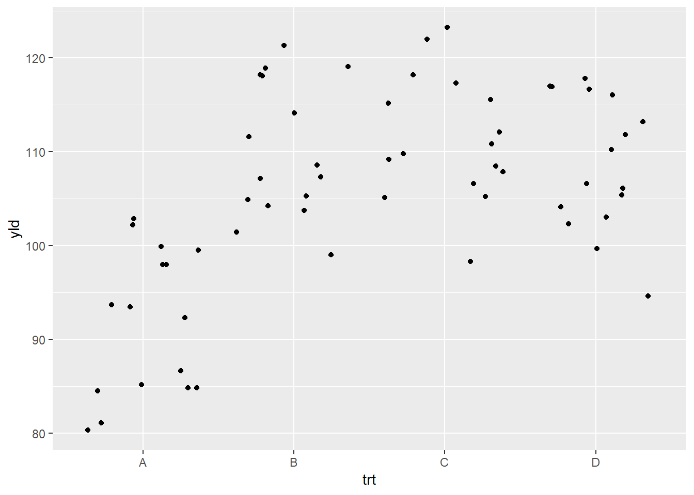
What occurred is that each observation is dispersed horizontally by
the differing amounts of random variation, with the goal to avoid
overlapping observations. Nonetheless, given the amount of variation,
the observations appear too disperses, making it difficult to clearly
see where one treatments ends and where the other one starts. We can
modify the geom_jitter() function to reduce the amount of
dispersion by using the argument width inside the function
(see below). (Note: all geom_* functions additional
arguments which can be added, depending on the need.)
ggplot(data = data_demo, aes(x = trt, y = yld)) +
geom_jitter(width = .2) # the default value is 0.4, we reduce the dispersion by half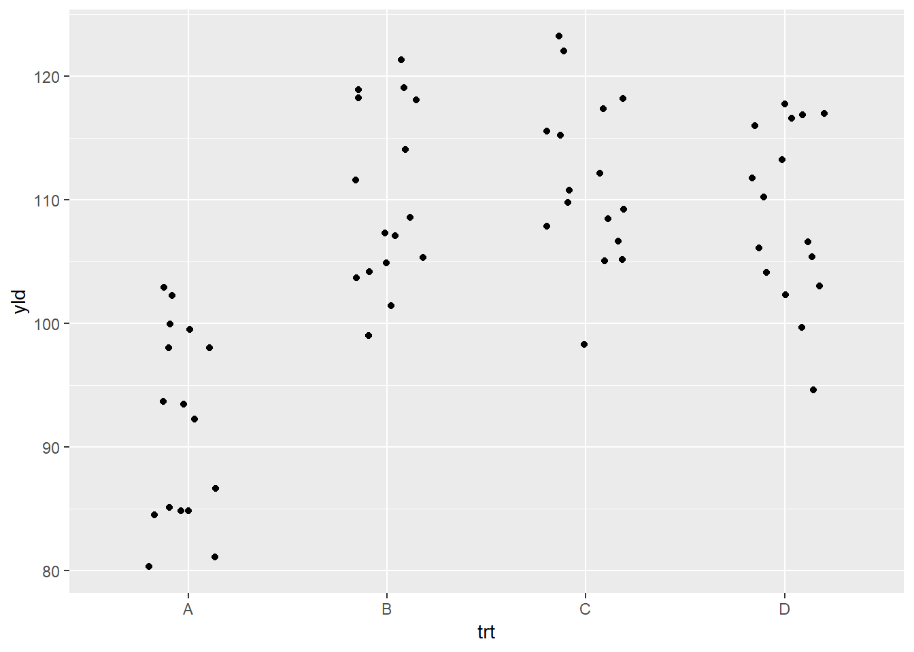
While points provide a good idea of the dispersion in a dataset, they are not the only way to represent the data. We will illustrate in the next set of code some of the different ways to explore the data:
Boxplot (geom_boxplot())
ggplot(data = data_demo, aes(x = trt, y = yld)) +
geom_boxplot() 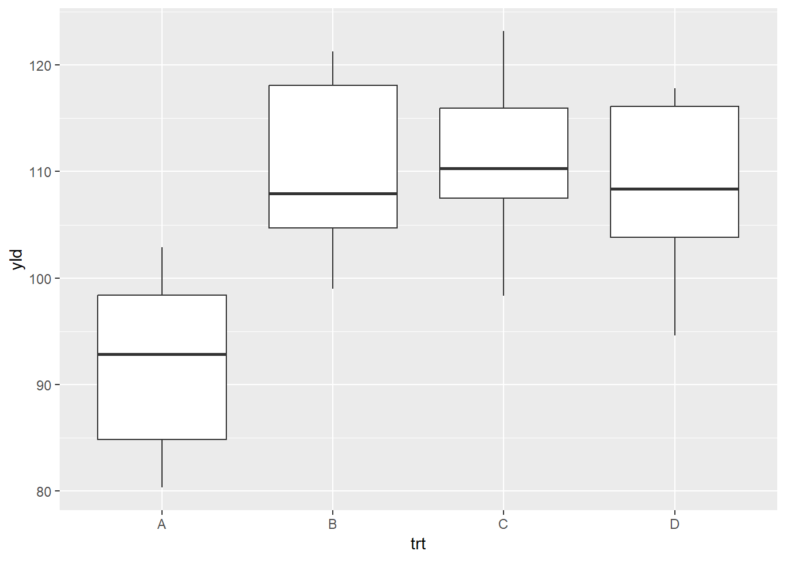
Violin plot (geom_violin())
ggplot(data = data_demo, aes(x = trt, y = yld)) +
geom_violin() 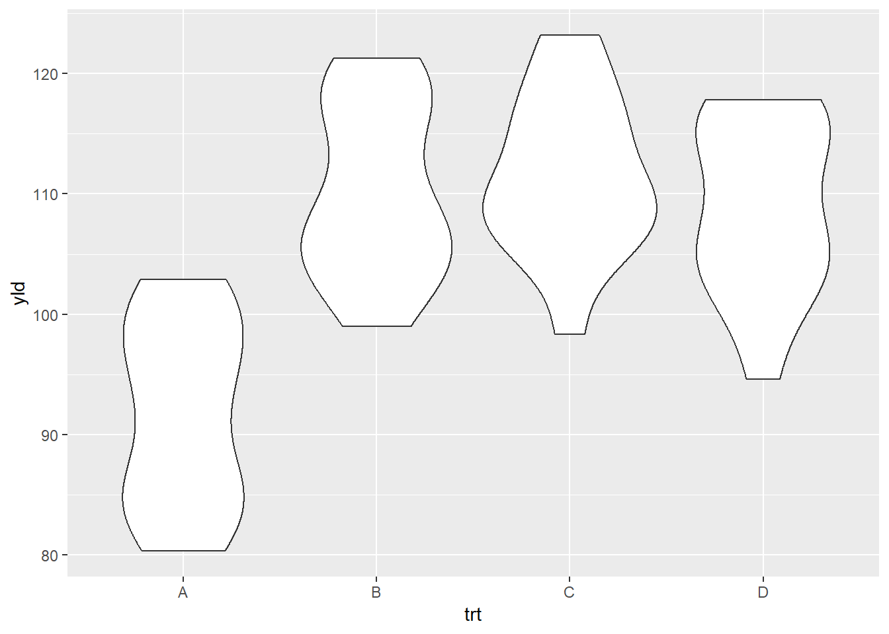
Dot plot (geom_dotplot())
ggplot(data = data_demo, aes(x = trt, y = yld)) +
geom_dotplot(binaxis = "y", stackdir = "center") ## Bin width defaults to 1/30 of the range of the data. Pick better value with `binwidth`.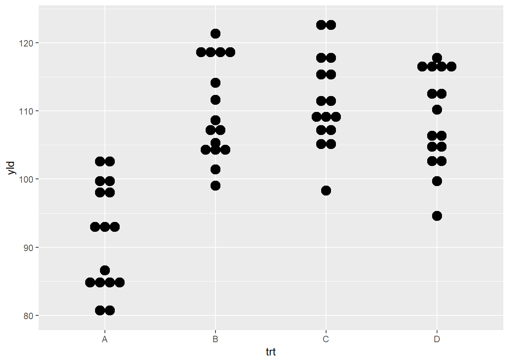
Another way to think about geom_* functions is to
consider these as layers. We can begin to stack different
options to improve the quality of the plot, as well as provide more
information about the data itself, the dispersion, and start to compare
different factors of interest.
# Boxplot and points
ggplot(data = data_demo, aes(x = trt, y = yld)) +
geom_boxplot()+
geom_jitter(width = .2, size = 4) 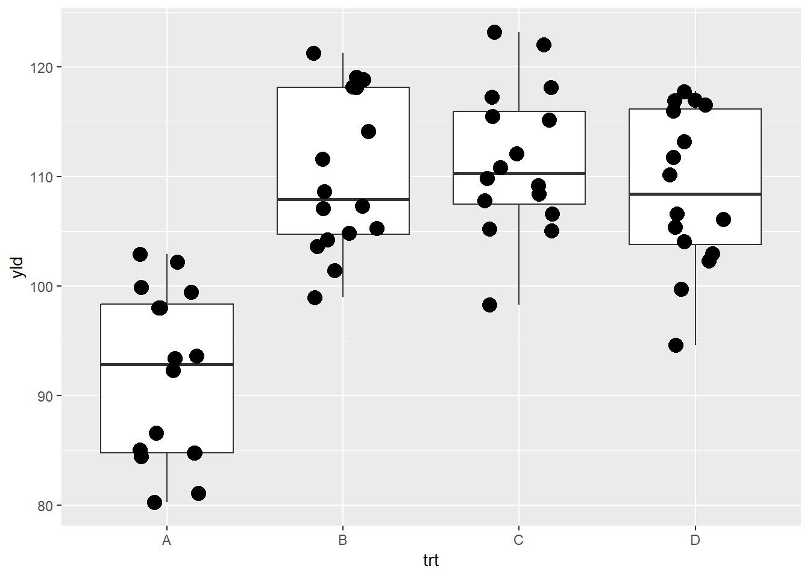
While there is no limit to the number of layers (geom_*) that you can use in a plot, remember that these all map to the same order that they appear and it may make it more difficult to make clear comparisons.
# Multiple layers
ggplot(data = data_demo, aes(x = trt, y = yld)) +
geom_boxplot()+
geom_jitter(width = .2, size = 4)+
geom_violin() # Note that the violin plot is the last layer to be add, therefore it will overlap with the other layers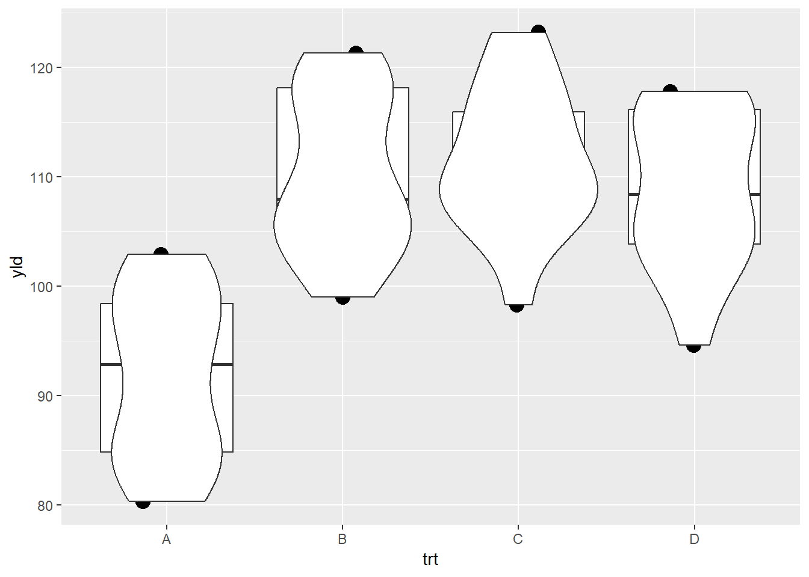
One way to overcome one graphic reducing the ability to make a clear interpretation is to change the order of the layers.
# Multiple layers
ggplot(data = data_demo, aes(x = trt, y = yld)) +
geom_violin()+
geom_boxplot(width = 0.3)+ # using the argument width we can adjust the box size
geom_jitter(width = .2, size = 4)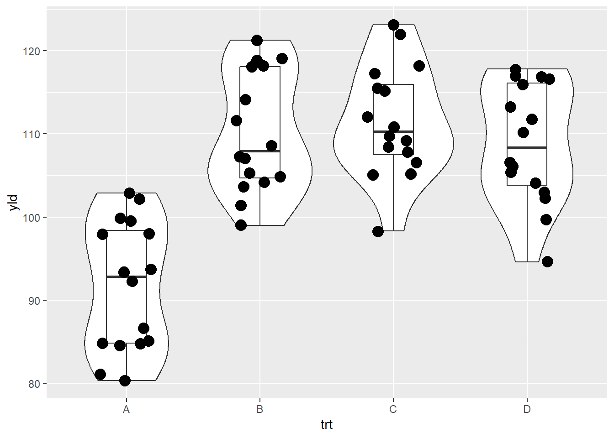
There are plenty of other native geom_* functions in
ggplot2. Below you can see other examples extracted from
the ggplot2 cheatsheet from RStudio (Download
eng or Download
sp)

Examples of geom_* functions
Extension packages
There are also extension packages that expand the geometric elements
and other functions from ggplot2. You can check a gallery
of different extension following this link, and few
examples below.

Examples of packages that works as extension for ggplot2.
From left to right ggwordcloud, ggridges, and
gggenes
Aesthetics
The next component in ggplot2 plots is aesthetics, which
is how our observations will be mapped in the plot. Aesthetics can have
multiple formats. So far, we have used aesthetics regarding the
positions x and y in the aes()
argument. However, there are many other formats that aesthetics can
take, and the most common are:
- Position: x and y-axis
- Color; fill; and alpha
- Shape
- Size
- Linetype
Color, fill, and alpha
These three aesthetics have some similarities.
color refers to the color of point or lines,
fill refers to the color for an enclosed space (box,
polygon, circle, etc), and alpha refers to the color
transparency.
In the the plot below we use the color aesthetic to
differentiate the treatments.
ggplot(data = data_demo, aes(x = trt, y = yld, color = trt)) +
geom_boxplot()+
geom_jitter(width = 0.2, size = 4)
If we want to use color only for the points, we remove
the argument color argument from the ggplot()
function, and write the argument inside the
geom_jitter()
ggplot(data = data_demo, aes(x = trt, y = yld)) +
geom_boxplot()+
geom_jitter(aes(color = trt), width = 0.2, size = 4) # different colors for each observation/point depending on the treatment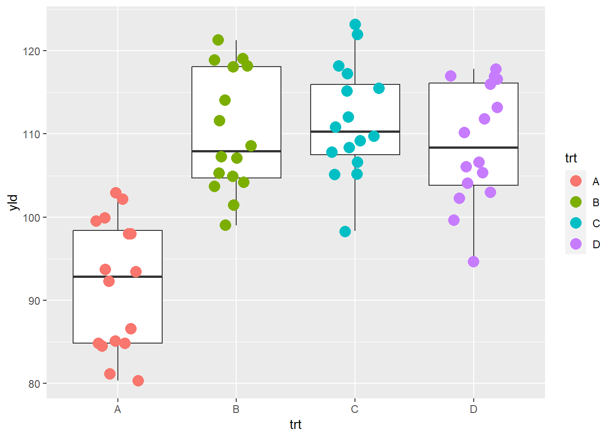
Or, we can use different fill colors in the respective boxplots
ggplot(data = data_demo, aes(x = trt, y = yld)) +
geom_boxplot(aes(fill = trt))+
geom_jitter(width = 0.2, size = 4)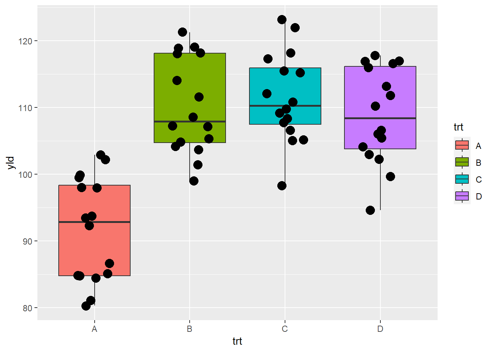
Lastly, here is an example using alpha to define the
transparency in the yield.
ggplot(data = data_demo, aes(x = trt, y = yld)) +
geom_boxplot()+
geom_jitter(aes(alpha = yld), # Here we are using alpha to show a yield gradient
width = 0.2, size = 4) # increase the point size to see the differences better 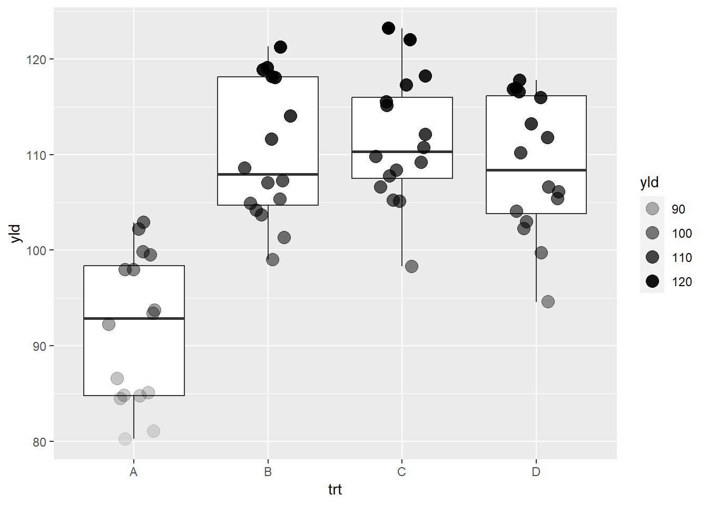
If we use these arguments (color, fill, and alpha) outside of the aesthetic function, they change the whole element.
ggplot(data = data_demo, aes(x = trt, y = yld)) +
geom_violin(color = "red")+ # border color equal to red
geom_boxplot(width = 0.3, fill = "green")+ # fill equal to green
geom_jitter(alpha = 0.4, # 60% of transparency
width = 0.2, size = 4) 
Size
The size aesthetic allows us to change the element
size.
ggplot(data = data_demo, aes(x = trt, y = yld)) +
geom_boxplot()+
geom_jitter(aes(size = sev), #The size of the point changes depending on the severity value
width = 0.2)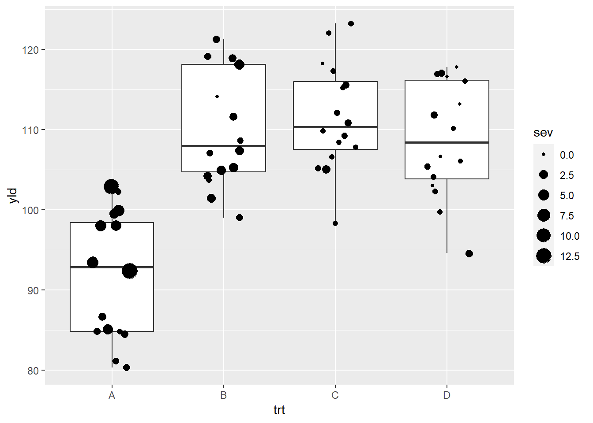
Shape
There is several options for the shape type in ggplot,
with the most common present below.

Different shape options
ggplot(data = data_demo, aes(x = trt, y = yld)) +
geom_boxplot()+
geom_jitter(aes(shape = trt),
width = 0.2, size = 4)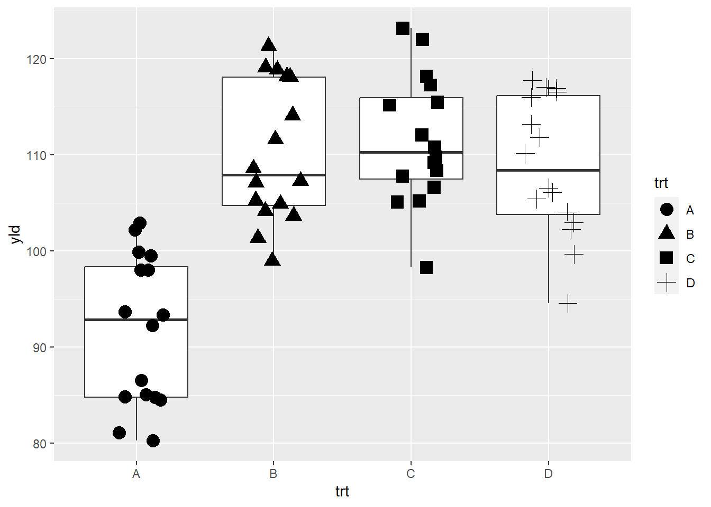
Note that shapes from 21 to 25 have color and fill, while the others only define the color.
ggplot(data = data_demo, aes(x = trt, y = yld)) +
geom_boxplot()+
geom_jitter(aes(color = trt, # point border color
fill = var), # point fill defined by the variety
shape = 21, # we can change fill and color on shape 21 to 25
stroke = 1.5, # to make point border thicker
width = 0.2, size = 4)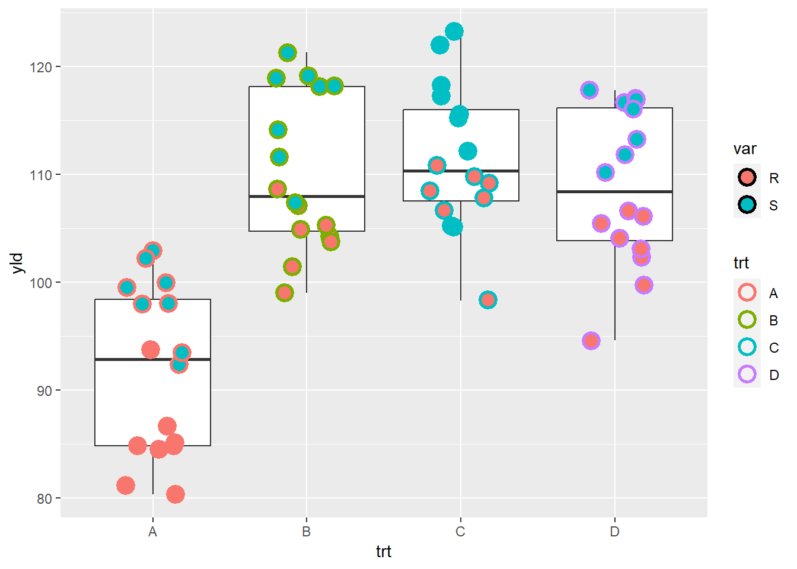
# when we talk about scale we will learn how to chose the colors
# so far we are using default ggplot options Linetype
We can also have different line types for each level of a variable.
In the example below, we use two different linetype
aesthetics to separate the varieties by their level of genetic
resistance, where R is resistant and S is susceptible.
# We use pipes to summarize the data by treatment and variety
data_line <- data_demo %>%
group_by(trt, var) %>%
summarise(sev = mean(sev)) ## `summarise()` has grouped output by 'trt'. You can override using the `.groups`
## argument.data_line## # A tibble: 8 × 3
## # Groups: trt [4]
## trt var sev
## <chr> <chr> <dbl>
## 1 A R 1.61
## 2 A S 6.28
## 3 B R 1.7
## 4 B S 1.58
## 5 C R 0.475
## 6 C S 0.669
## 7 D R 0.431
## 8 D S 0.444# Then we creat a plot with different line types
ggplot(data_line) +
geom_line(aes(x = trt,
y = sev,
linetype = var, # each variety (R or S) will have a different line type
group = var), # group is telling R that it should group the data by variety
size = 1) # 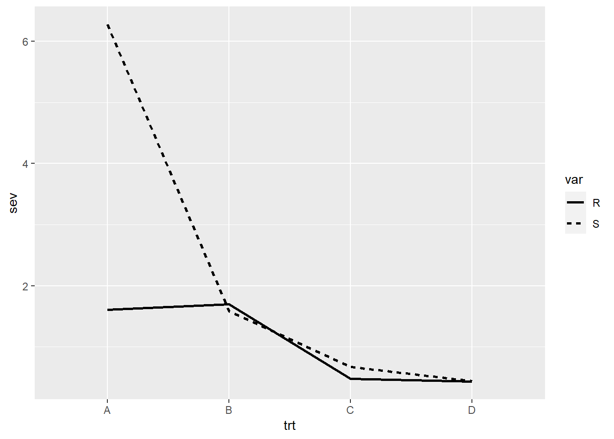
Scales
So far we have built our plot using the default options, now we will
start to customize it using scales. Scales control how the
aesthetics are mapped, therefore, for each aesthetic we will have a
respective scale function. Let’s start by looking at the x
and y aesthetics.
Position scales (x- y-axis)
scale_*_continuous
X-axis, we can use scale_y_continuous. Y-axis, we can
use scale_x_continuous.
ggplot(data = data_demo, aes(x = trt, y = yld)) +
geom_boxplot()+
geom_jitter(aes(fill = trt), shape = 21, width = 0.2, size = 4, show.legend = FALSE)+
scale_y_continuous( # because our y-axis variable is continuous
name = "Title of our axis", # name of the axis
limits = c(70, 130), # here we increase a little our axis limits
breaks = c(seq(70,130,10))) # secondary axis breaks
We can add a second axis.
ggplot(data = data_demo, aes(x = trt, y = yld)) +
geom_boxplot()+
geom_jitter(aes(fill = trt), shape = 21, width = 0.2, size = 4, show.legend = FALSE)+
scale_y_continuous(name = "Yield (bu/ac)",
limits = c(70, 130),
breaks = c(seq(70,130,10)),
# Here we add a second axis
sec.axis = sec_axis( # if we only want to duplicate an axis, we can use sec.axis = dup_axis())
trans = ~ . *0.0672, # we use a transformation to change yield from bu/ac to ton/ha
name = "Yield (ton/ha)", # secondary axis name
breaks = c(seq(4.5,9,0.5)))) # secondary axis breaks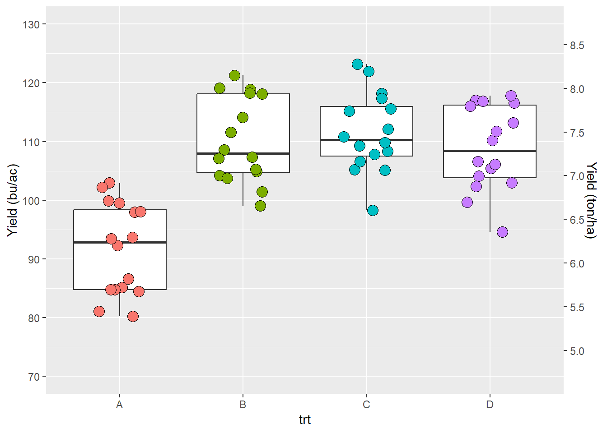
NOTE: the second axis works for discrete axis as well (see next subsection)
scale_*_discrete
We will use the x-axis to illustrate. With scale_*_discrete you can do things like rearrange or select/excluse levels.
ggplot(data = data_demo, aes(x = trt, y = yld)) +
geom_boxplot()+
geom_jitter(aes(fill = trt), shape = 21, width = 0.2, size = 4, show.legend = FALSE)+
scale_x_discrete(
limits = c("B", "A", "D")) # here we change the order of treatments and exclude the treatment C## Warning: Removed 16 rows containing missing values (stat_boxplot).## Warning: Removed 16 rows containing missing values (geom_point).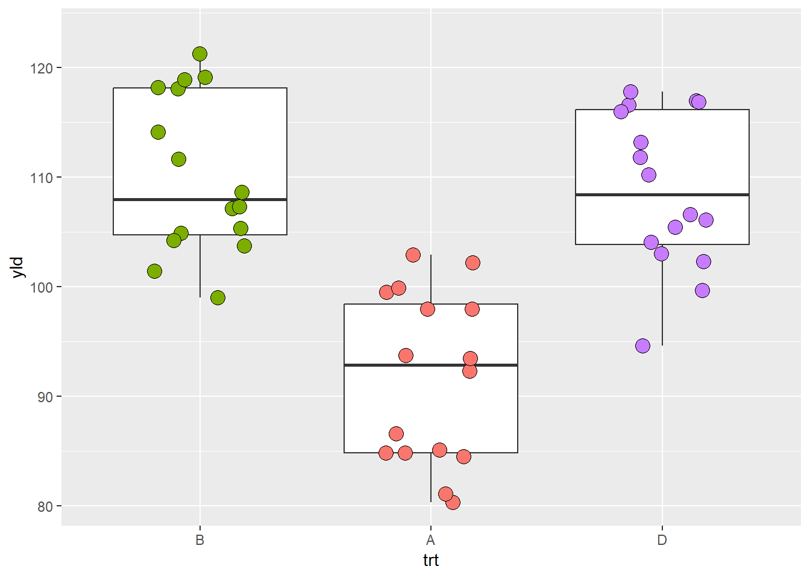
NOTE: R give an warning message informing that there are
missing values. This is because our selection made by argument
limits transformed all values of trt = C into
missing values, NAs.
We can also change the labels using the labels
argument.
ggplot(data = data_demo, aes(x = trt, y = yld)) +
geom_boxplot()+
geom_jitter(aes(fill = trt), shape = 21, width = 0.2, size = 4, show.legend = FALSE)+
scale_x_discrete(
labels = c('B' = 'New Label', # pProvide to ggplot new label information for each variable
'D' = 'New Label \n in two lines')) # you can use the "\n" to break the sentence in more lines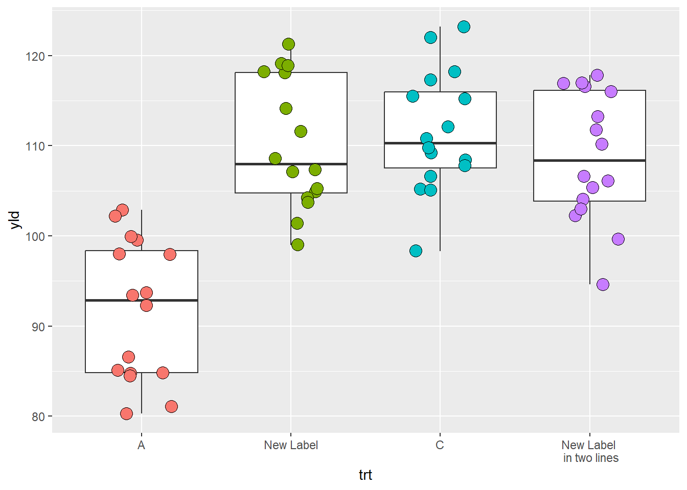
Color and fill scales
color and fill are two aesthetics that are
very similar. To avoid redundancy, we will use examples based on
fill only, but the same principles apply to the color
aesthetic. To change colors in R, we can use built-in names or the RGB
code. There are 657 built-in color names in R. You can see their names
by using the function color() and the figure below provides
a few examples.
The RBG code is the additive combination of Red, Green, and Blue in an hexadecimal format, which can take 16 possible “values” (0, 1, 2, 3, 4, 5, 6, 7, 8, 9, A, B, C, D, E, F) which are in 6-character arrangements. There are also two extra characters which define the color transparency.
Colors with the name build-in in R (left and center) and RGB scheme
scale_fill_manual()
ggplot(data = data_demo, aes(x = trt, y = yld)) +
geom_boxplot()+
geom_jitter(aes(fill = trt),
shape = 21, width = 0.2, size = 4)+
scale_fill_manual(values = c("blue", # color name
"gray67", # color name, but from a different gray intensity
"#9f3b6c", # use RGB code to assign a color
"#9f3b6c80")) # same color as trt C, but with transparency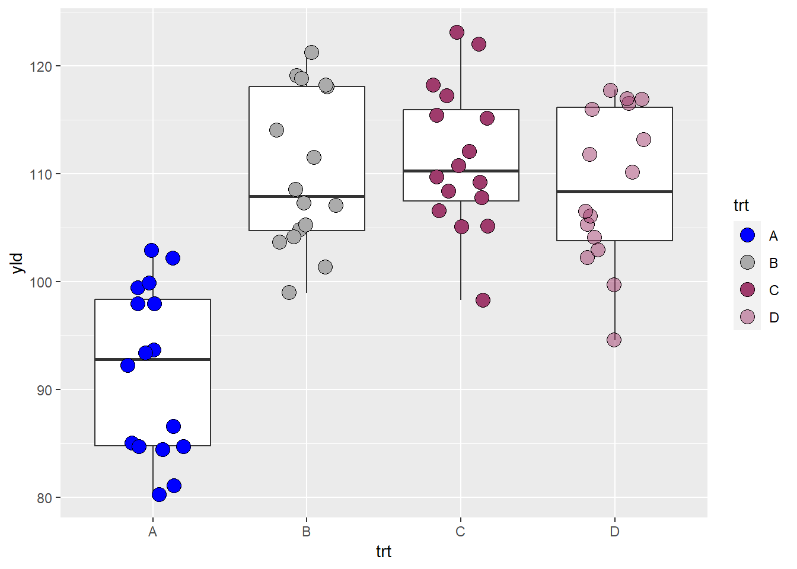
Although selecting a color for a plot seems trivial, it is actually very challenging. There are many things to consider when we use a color scheme (pallet). We need to consider if the person is color blind or if they follow good practices for data visualization. While we will not specifically discuss these topics during the course, we highly recommend that you look for more information on these topics.
There are plenty of resources to chose color, of which one of the most popular is the website colorbrewer2.org, conceptualized by professor Dr. Cynthia A. Brewer. In this website there are suggestions of pallets for sequential, diverging, and qualitative data, as well as useful information regarding color blind and print friendly options.
Print screen of colorbrewer2.org website. 1 - number of classes; 2 - type of data; 3 - pallet option; 4 - name of pallet and information for color blind, photocopy, LCD, and printer friendly options
This website was so popular within ggplot2 that it has
become a package and now is native to ggplot2 through the function
scale_color/fill_brewer(). An example using the pallet from
the figure above can be seen in the next plot .
ggplot(data = data_demo, aes(x = trt, y = yld)) +
geom_boxplot()+
geom_jitter(aes(fill = trt),
shape = 21, width = 0.2, size = 4)+
scale_fill_brewer(palette = "Paired") # This scale automatic identify the number of classes and used the defined pallet to fill the colors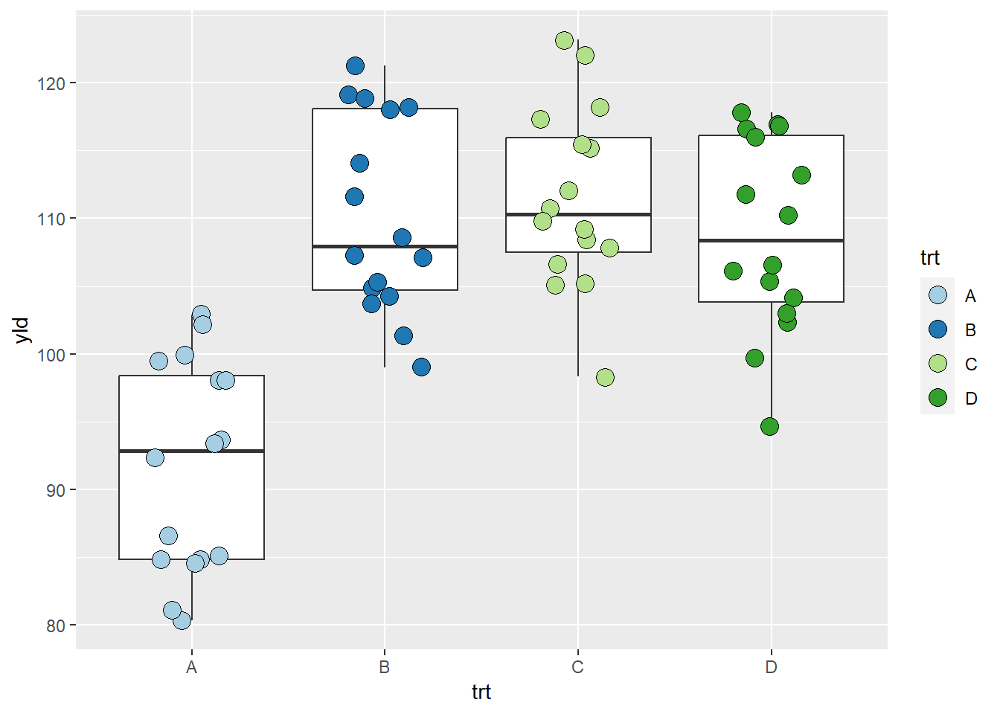
Interestingly, there are also developers who have created packages for color pallets, one example is the package ggsci, where the pallets were created using colors common to a select group of scientific journals.
library(ggsci)
ggplot(data = data_demo, aes(x = trt, y = yld)) +
geom_boxplot()+
geom_jitter(aes(fill = trt),
shape = 21, width = 0.2, size = 4)+
scale_fill_npg() # This scale automatically identifies the number of classes and uses the defined pallet to fill the colors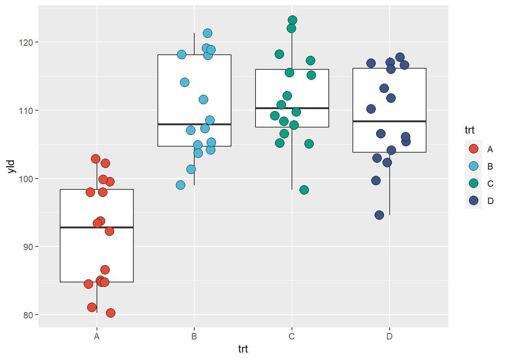
scale_fill_gradient*()
If our variable is quantitative, we can use a color fill based on a
gradient. There are basically 3 different scales for gradient,
scale_fill_gradient(), scale_fill_gradient2(),
and scale_fill_gradientn().
scale_fill_gradient(): create a gradient from two colors
(low and high)
ggplot(data = data_demo, aes(x = trt, y = yld)) +
geom_boxplot()+
geom_jitter(aes(fill = fdk),
shape = 21, width = 0.2, size = 4)+
scale_fill_gradient(low = "green",
high = "red",
na.value = "blue")
scale_fill_gradient2(): create a gradient from three
colors (low, middle, and high)
ggplot(data = data_demo, aes(x = trt, y = yld)) +
geom_boxplot()+
geom_jitter(aes(fill = fdk),
shape = 21, width = 0.2, size = 4)+
scale_fill_gradient2(low = "blue", # This is the low value
mid = "yellow", # middle value
high = "red", # high value
midpoint = 21, # set up the middle point, otherwise will use the default "0"
na.value = "black") # we can also change the color of NAs values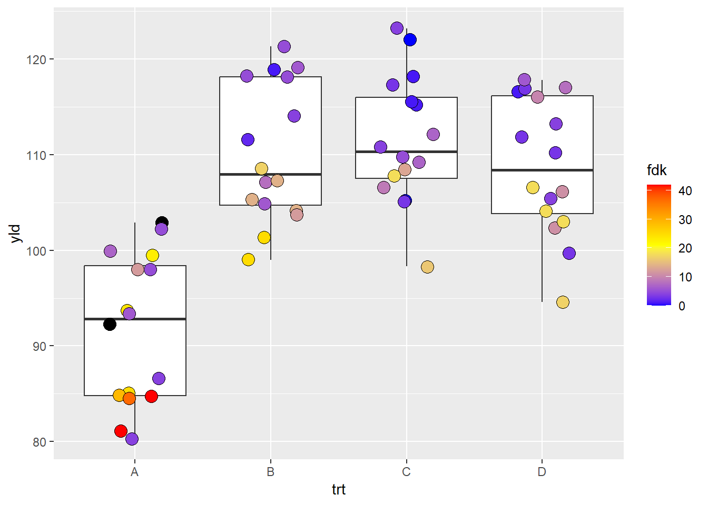
# Note, ggplot2 distributes the color symmetric from the middle point, so, depending on where the middle point is, it is possible that low or high color values may not be reached. scale_fill_gradientn(): create a gradient from n
colors
ggplot(data = data_demo, aes(x = trt, y = yld)) +
geom_boxplot()+
geom_jitter(aes(fill = fdk),
shape = 21, width = 0.2, size = 4)+
scale_fill_gradientn(colours = c("#FF0000", "#FFFF00", "#00FF00",
"#00FFFF", "#0000FF", "#FF00FF")) 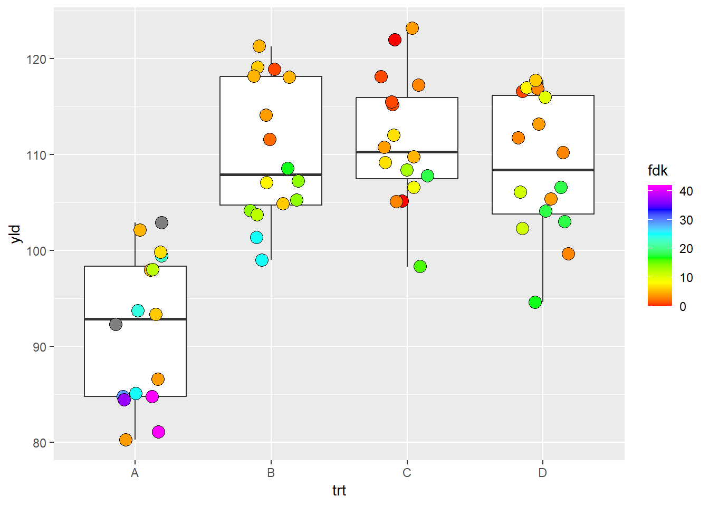
Alpha and size scales
Alpha and size are two scales that are generally used for quantitative variables.
scale_alpha_*
scale_alpha_continuous(): plot the variables in a range
of transparency. By default, this range is from 0.1 to 1.0
# Without specifying the scale, R will assume the default values
# therefore, here we would have the same results as if we have
# scale_alpha_continuous(range = c(0.1,1))
ggplot(data = data_demo, aes(x = trt, y = yld)) +
geom_boxplot()+
geom_jitter(aes(alpha = fdk),
width = 0.2, size = 4)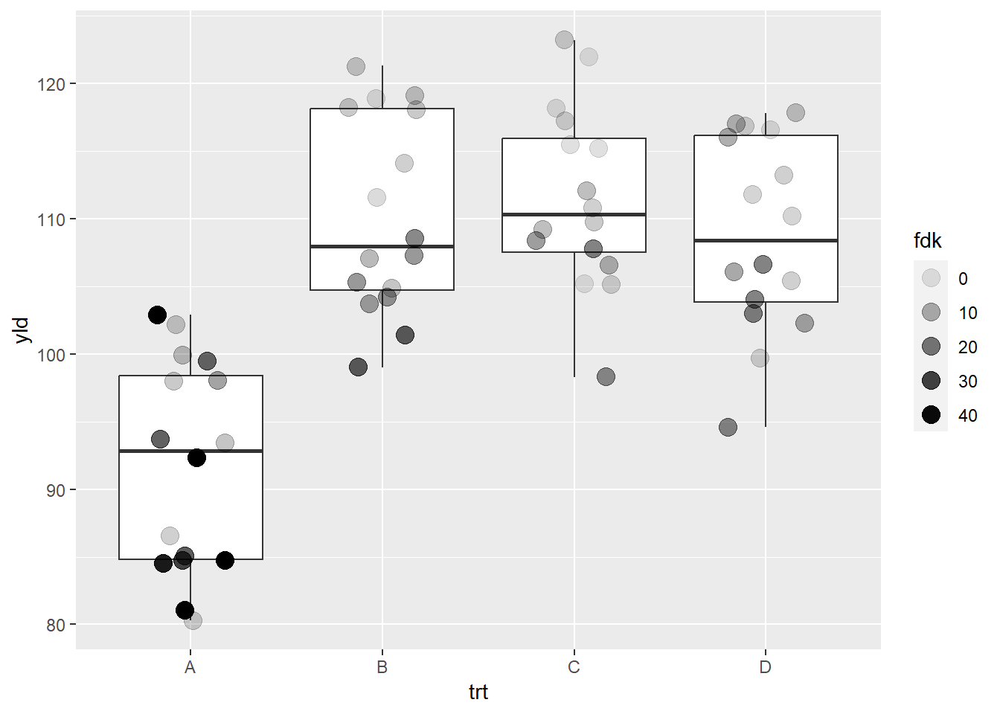
We can change the range by using the argument range
ggplot(data = data_demo, aes(x = trt, y = yld)) +
geom_boxplot()+
geom_jitter(aes(alpha = fdk),
width = 0.2, size = 4)+
scale_alpha_continuous(range = c(0.3, 0.6)) 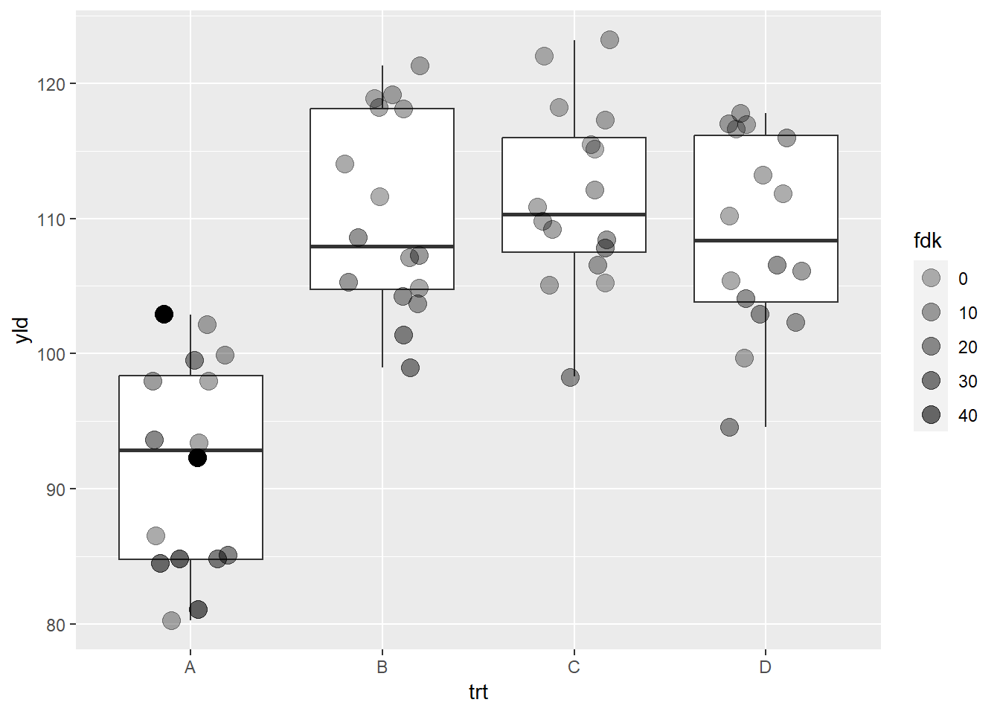
Note that there are two observations in treatment A where the color
transparency did not change. These two observations represent points
without values for FDK (NAs). We can work on some
strategies to deal with this problem.
First, remove those two points from the whole data set. This will however result in another problem, since the calculations used to create boxplots considers those observations.
A better option is to use a different color or shape for those
observations, which will require some work in our code. In the function
scale_alpha_continuous there is the argument
na.value, where we will assign values of alpha
to NA observations. We can make NAs
observations disappear by attributingna.value = 0. We then
plot those two observations using another layer
(geom_jitter), where we could use shape or color to
differentiate those observations. In our example, we use shape.
ggplot(data = data_demo, aes(x = trt, y = yld)) +
geom_boxplot()+
geom_jitter(aes(alpha = fdk),
width = 0.2, size = 4)+
geom_jitter(data = filter(data_demo, is.na(fdk)), # filter the data such that there are only the two obs with NA values
aes(x = trt, y = yld), # position
shape = 8, # we will define a very different shape for NA
width = 0.2, height = 0, size = 4)+
scale_alpha_continuous(range = c(0.4, 1), # our alphas will change from 0.4 to 1
na.value = 0) # Make NAs values completely transparent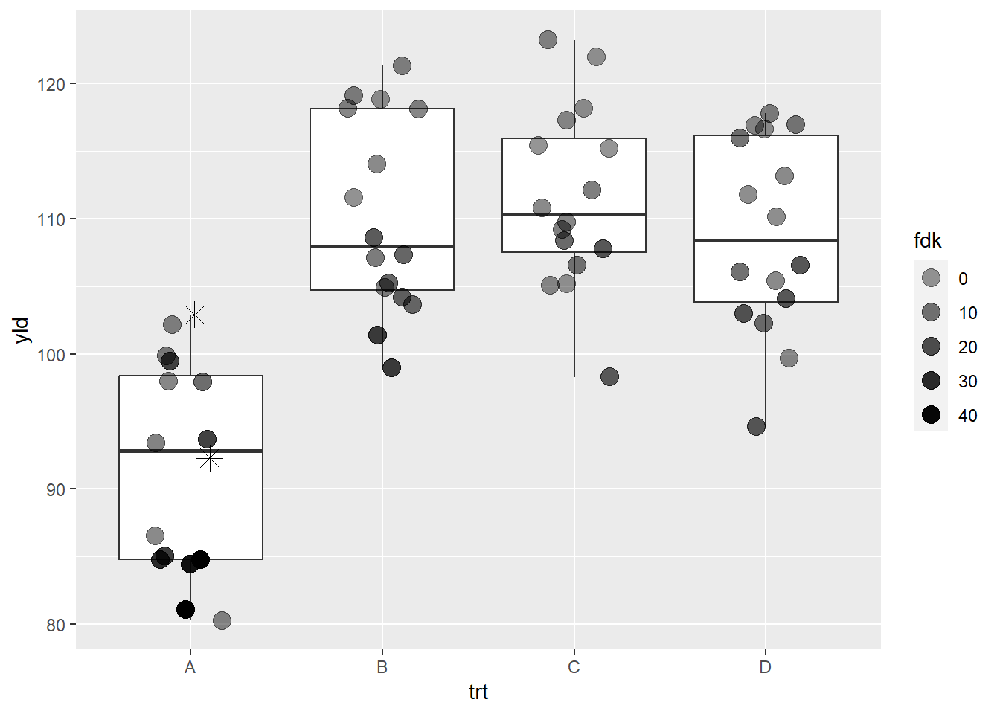
This is an example of how we can use the layer design of
ggplot2 and some creativity to overcome a potential
problem. Each scale can have a way to assign values for
NAs, which is very convenient to other scale
functions, such as color or shape. However, with
scale_alpha_continuous, changing the transparency for
NAs does not make them disappear, so we need to
specifically define the NAs transparency
(na.value = 0) and add a new layer only for those
two points. This same principle can be applied for other situations,
such as wanting to emphasize a particular point in a database, etc.
scale_size_*
Size is similar to alpha scale.
ggplot(data = data_demo, aes(x = trt, y = yld)) +
geom_boxplot()+
geom_jitter(aes(size = fdk),
width = 0.2)+
scale_size_continuous(range = c(1, 6)) # this is actually the default value ## Warning: Removed 2 rows containing missing values (geom_point).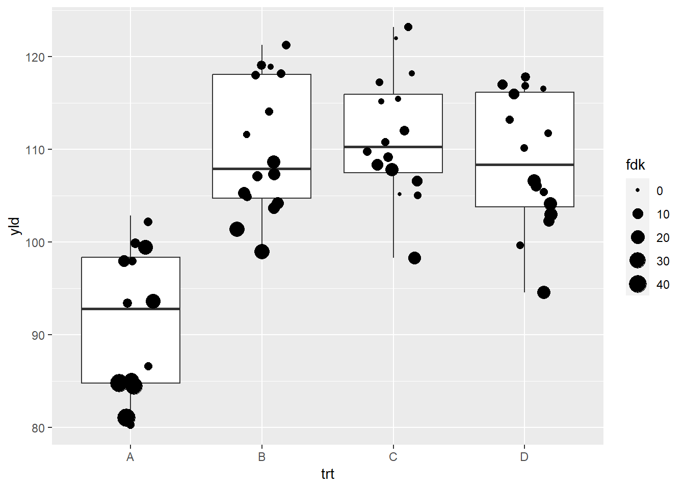
Note that ggplot provides us with a warning message
indicate that two values were removed. This is different to how
scale_alpha_continuous handled the same issue. We emphasize
that it is important to understand how ggplot will deal with
NAs. Similar to the previous example, we will add an extra
layer to add these NAs. We also will change the order,
making values with lower FDK bigger, by adding the argument
trans = "reverse".
ggplot(data = data_demo, aes(x = trt, y = yld)) +
geom_boxplot() +
geom_jitter(aes(size = fdk),
width = 0.2) +
# same as previous example to deal with the NA problem
# warning will continue to show up, but the NAs are now added
geom_jitter(data = filter(data_demo, is.na(fdk)),
aes(x = trt, y = yld),
shape = 8,
width = 0.2, height = 0, size = 4) +
scale_size_continuous(range = c(0.5, 5),
trans = "reverse") # this reverses the size argument, meaning small values have a larger size## Warning: Removed 2 rows containing missing values (geom_point).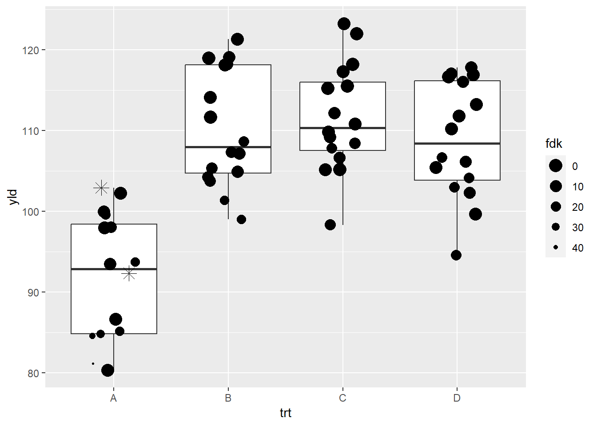
Shape and linetype scales
scale_shape_manual
The shape option is very limited in terms of customization.
ggplot(data = data_demo, aes(x = trt, y = yld)) +
geom_boxplot()+
geom_jitter(aes(shape = var), # We will use the factor, variety, to define the different shapes
width = 0.2, size = 4)+
scale_shape_manual(values = c(8, 15)) # Here we defined two different shapes depending on the variety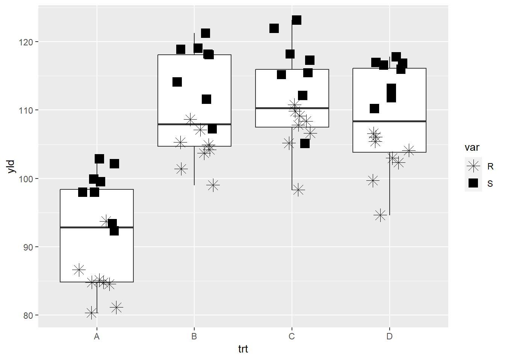
scale_linetype_manual
There are a few options for linetype that we can use.
# preparing the data for our plot
line_yld = data_demo %>%
group_by(trt, var) %>%
summarize(yld = mean(yld))## `summarise()` has grouped output by 'trt'. You can override using the `.groups`
## argument.line_yld## # A tibble: 8 × 3
## # Groups: trt [4]
## trt var yld
## <chr> <chr> <dbl>
## 1 A R 85.1
## 2 A S 98.3
## 3 B R 104.
## 4 B S 116.
## 5 C R 107.
## 6 C S 116.
## 7 D R 103.
## 8 D S 115. ggplot(line_yld) +
geom_line(aes(x = trt,
y = yld,
linetype = var, # each variety (R or S) will have a different line type
group = var),
size = 1) 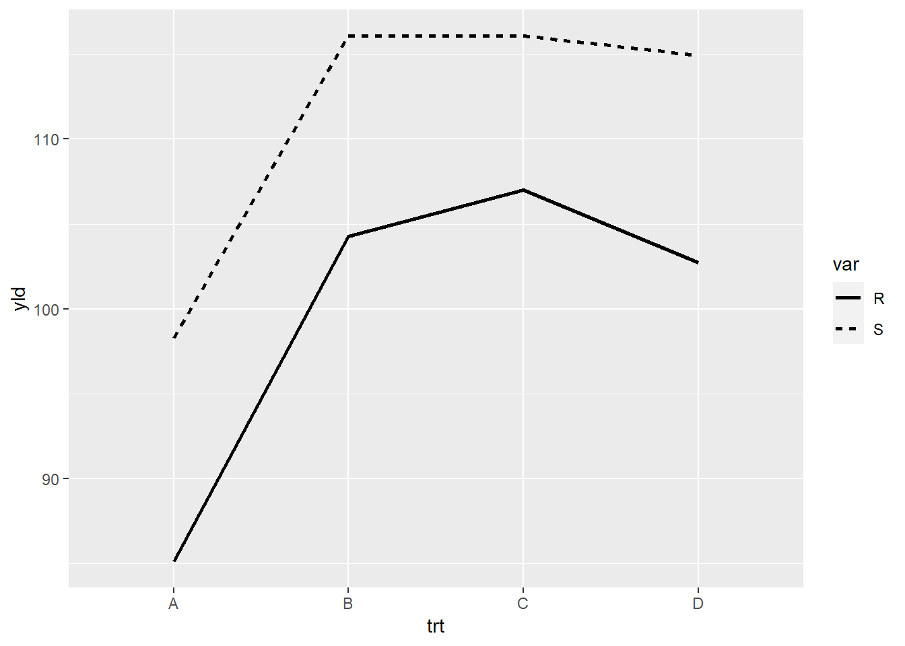
R has a few options for lines. These can selected by their name, or
by the number defined by scale_linetype_manual.
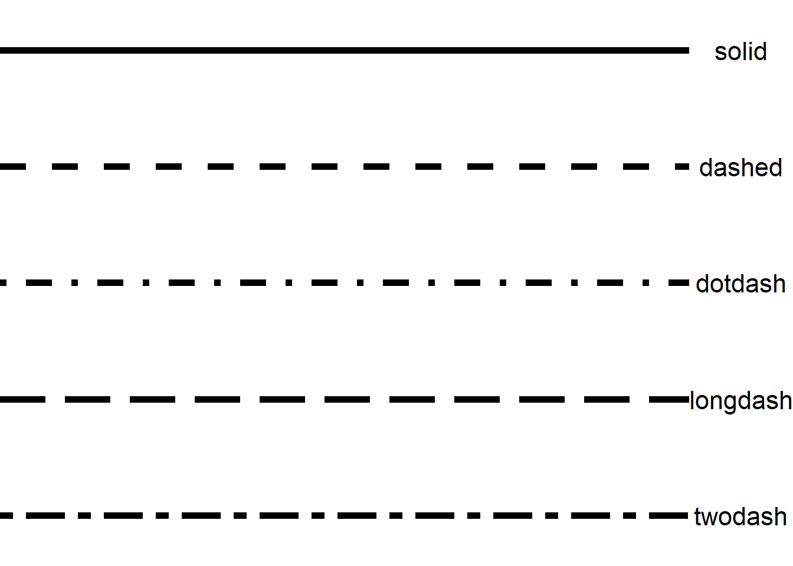
Illustrated using the linetype for varieity and the options “twodash” or “dashed”.
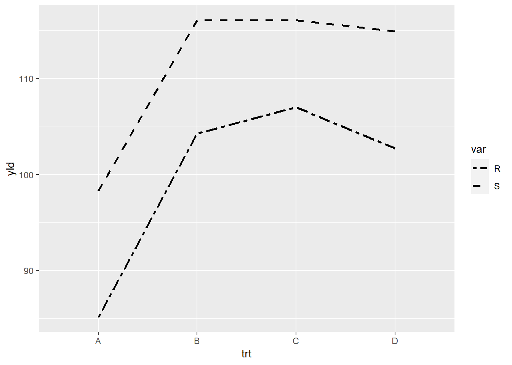
Facets
Facets allow us to create multiple plots based on specified variable.
In our previous examples, we used things like shape to differentiate
some of the variables, for example, variety. Now, we will create
separate plots for the variety, but within the same graphic. To
accomplish this, we apply the option facet_*, of which
there are two types of facet in ggplot2,
facet_wrap and facet_grid.
Facet wrap
ggplot(data = data_demo, aes(x = trt, y = yld)) +
geom_boxplot()+
geom_jitter(aes(fill = trt), shape = 21, width = 0.2, size = 4)+
scale_fill_npg() +
facet_wrap(~var)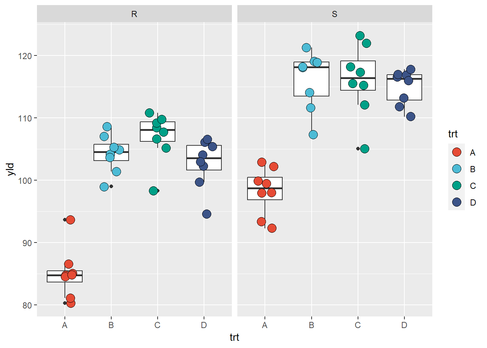
What occurred? Our original plot was now split in two with one for the resistant variety (R) and the other for the susceptible (S) variety. The configurations for the two plots are similar, as are the scales, meaning that they provide standardized information and can be compared, etc.
One thing to note though is that the data used to create this plot is
different from when we had the two variables combined. As result,
ggplot2 considered that some of our observations are
outliers, when before we did not have this issue. This is a good example
which illustrates that when we change the database structure, we need to
make sure that we verify the outputted result to check for problems. In
this example, we need to an options to suppress the outlier in the
geom_boxplot.
ggplot(data = data_demo, aes(x = trt, y = yld)) +
geom_boxplot(outlier.alpha = 0)+ # we define the outliers as completely transparent
# Note: By making these outliers observations transparent, they are still considered in the calucations for boxplots,
# at same time, they are not duplicated in the plot with the geom_jitter
geom_jitter(aes(fill = trt), shape = 21, width = 0.2, size = 4)+
scale_fill_npg() +
facet_wrap(~var)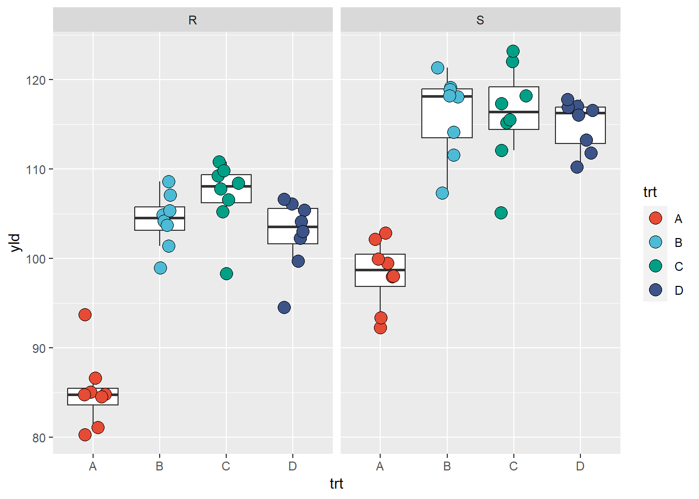
Below we can see an example of how to change the y-axis scale and the strip text (text above each plot)
ggplot(data = data_demo, aes(x = trt, y = yld)) +
geom_boxplot(outlier.alpha = 0)+ #outliers defined to be completely transparent
geom_jitter(aes(fill = trt), shape = 21, width = 0.2, size = 4)+
scale_fill_npg() +
facet_wrap(~var,
scales = "free_y", # scales will be independent if free, or only one dimension if free_y/x
labeller = labeller( # here is an example of how to change the
var = c("R" = "Resistent", # need to remember the order of the call to define the variables
"S" = "Susceptible"))) # then give a new name for each level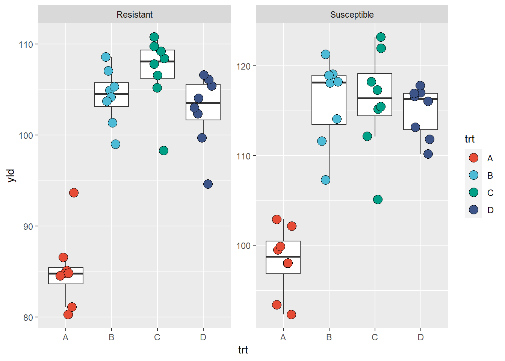
Below, we can see an example of how to change the y-axis scale and output the graph in a stacked format with labels (text above each plot)
ggplot(data = data_demo, aes(x = trt, y = yld)) +
geom_boxplot(outlier.alpha = 0)+ # outliers are defined to be completely transparent
geom_jitter(aes(fill = trt), shape = 21, width = 0.2, size = 4)+
scale_fill_npg() +
facet_wrap(~var, labeller = labeller(var = c("R" = "Resistent", "S" = "Susceptible")),
ncol = 1, nrow = 2) # this defines how the graphics are displayed
Facet grid
facet_grid” create a grid of plots, using one variable
to define the columns and the other to define the rows. In the example
below we split the incidence between “low” (inc \(\leq\) 10%) and high (inc \(\ge\) 10%) using mutate and
logical operators.
data_grid <- data_demo %>%
# create a new variable by splitting the incidence using a 10% threshold
mutate(inc_cat = if_else(inc <=10, "Low Incidence", "High Incidence"))
ggplot(data = data_grid, aes(x = trt, y = yld)) +
geom_boxplot(outlier.alpha = 0)+
geom_jitter(aes(fill = trt), shape = 21, width = 0.2, size = 4)+
scale_fill_npg() +
facet_grid(inc_cat~var, # inc_cat = row; var=column
labeller = labeller(var = c("R" = "Resistent", "S" = "Susceptible")))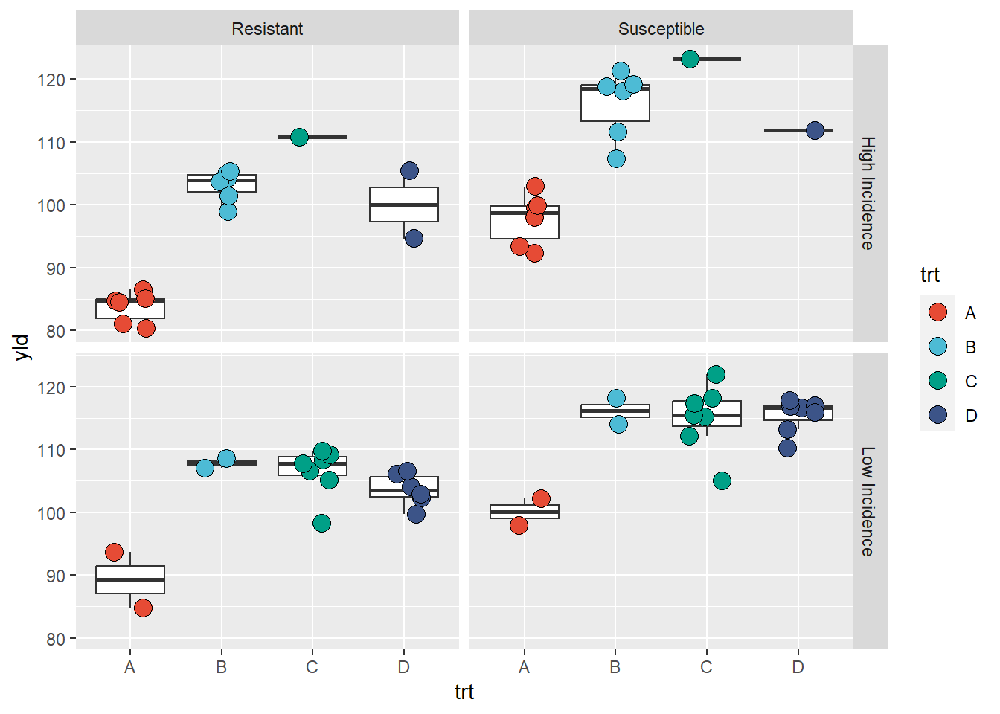
We can use grid with only one variable as well.
ggplot(data = data_demo, aes(x = trt, y = yld)) +
geom_boxplot(outlier.alpha = 0)+
geom_jitter(aes(fill = trt), shape = 21, width = 0.2, size = 4)+
scale_fill_npg() +
facet_grid(.~var) # grid by column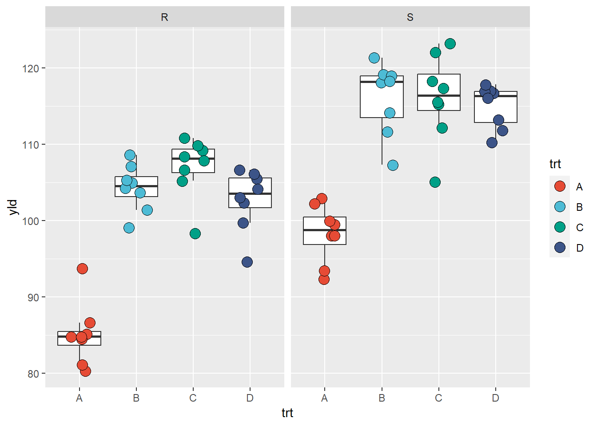
ggplot(data = data_demo, aes(x = trt, y = yld)) +
geom_boxplot(outlier.alpha = 0)+ # outliers defined to be completely transparent
geom_jitter(aes(fill = trt), shape = 21, width = 0.2, size = 4)+
scale_fill_npg() +
facet_grid(var~.) # grid by row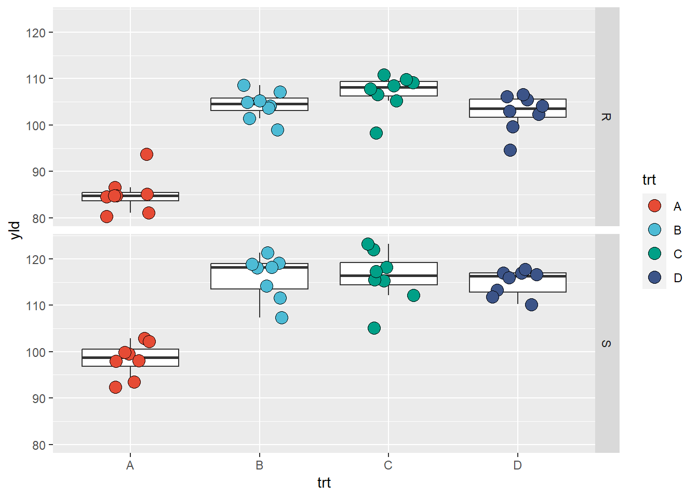
Labels
Below we have an example of how to change the y-axis scale and text options
ggplot(data = data_demo, aes(x = trt, y = yld)) +
geom_boxplot(outlier.alpha = 0)+
geom_jitter(aes(fill = trt), shape = 21, width = 0.2, size = 4)+
scale_fill_npg() +
labs(
# labels for the plots in general
title = "Here is a title",
subtitle = "Here is the plot subtitle",
caption = "This is figure caption",
tag = "A",
# Labels for the aesthetics
y = "y-axis title",
x = "x-axis title",
fill = "fill title"
)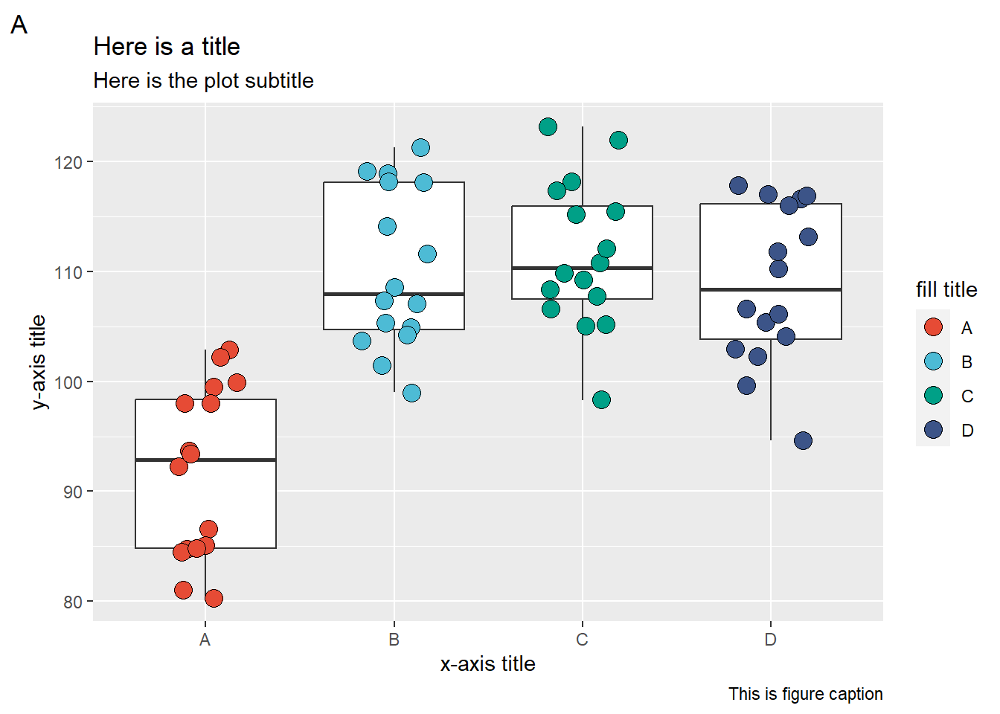
Themes
So far, we built our plots focusing on how to work and under the data
being plotted by using layers (geom), aesthetics, and
facets. Now we will take a quick look on how to change some of non-data
components of the plot. We can make many of these changes using
theme().
ggplot2 has complete themes and options to customize
those. There are also several packages that have extra complete
themes.
Complete themes
ggplot2 has ten built-in themes that are very convenient
to use.
Built-in themes`
theme_bw: dark-on-light, works well
with presentations displayed with a projector.
ggplot(data = data_demo, aes(x = trt, y = yld)) +
geom_boxplot(outlier.alpha = 0) +
geom_jitter(aes(fill = trt), shape = 21, width = 0.2, size = 4) +
scale_fill_npg() +
labs(y = "Yield (bu/ac)", x = "Treatments", fill = "Treatments") +
# only enter with the theme name
theme_bw() # theme black and white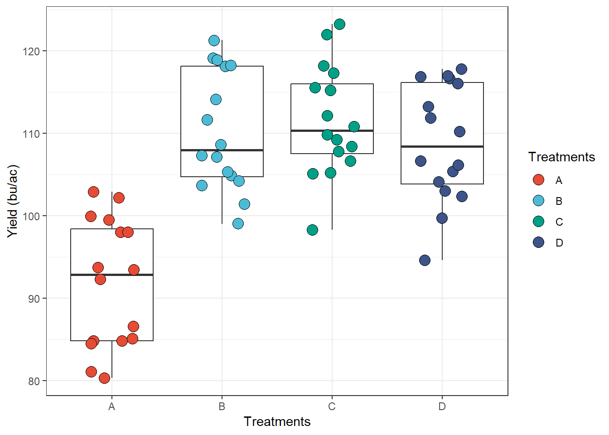
theme_minimal: no background
annotations
ggplot(data = data_demo, aes(x = trt, y = yld)) +
geom_boxplot(outlier.alpha = 0)+
geom_jitter(aes(fill = trt), shape = 21, width = 0.2, size = 4)+
scale_fill_npg() +
labs(y = "Yield (bu/ac)", x = "Treatments", fill = "Treatments")+
# only enter with the theme name
theme_minimal() 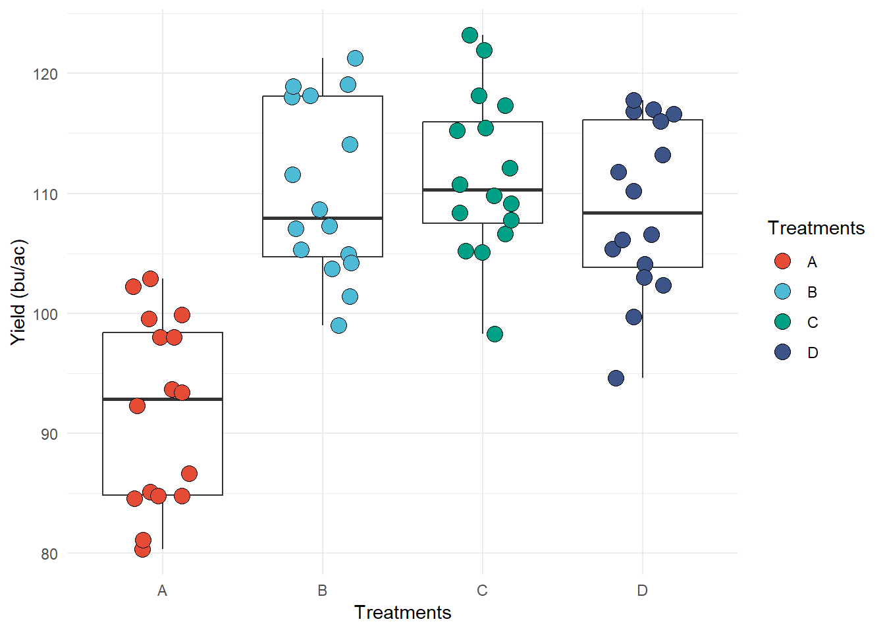
theme_classic: classic design, x and y
axis lines, but no gridlines
ggplot(data = data_demo, aes(x = trt, y = yld)) +
geom_boxplot(outlier.alpha = 0)+
geom_jitter(aes(fill = trt), shape = 21, width = 0.2, size = 4)+
scale_fill_npg() +
labs(y = "Yield (bu/ac)", x = "Treatments", fill = "Treatments")+
# only enter with the theme name
theme_classic() 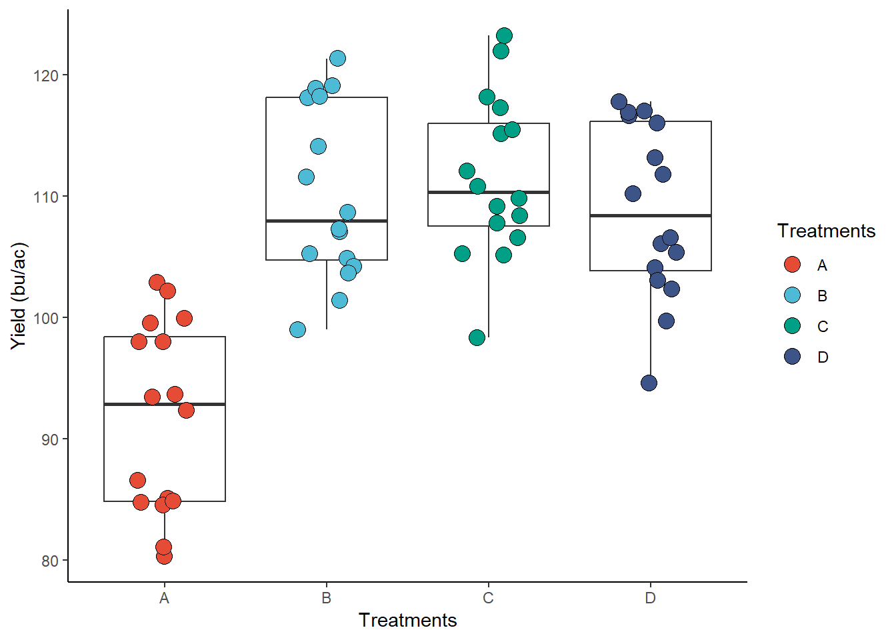
Other complete themes in ggplot2 include:
theme_grey() (default); theme_linedraw();
theme_light(); theme_dark();
theme_void(); theme_test()
From other packages
There is several package with built-in themes, here we will use only two as examples.
ggthemes package
ggthemes
package - Has several different complete themes. The example below
(theme_economist()) is inspired by plots made by the
magazine “The Economist”.
library(ggthemes)
ggplot(data = data_demo, aes(x = trt, y = yld)) +
geom_boxplot(outlier.alpha = 0)+
geom_jitter(aes(fill = trt), shape = 21, width = 0.2, size = 4)+
scale_fill_npg() +
labs(y = "Yield (bu/ac)", x = "Treatments", fill = "Treatments")+
# only enter with the theme name
theme_economist()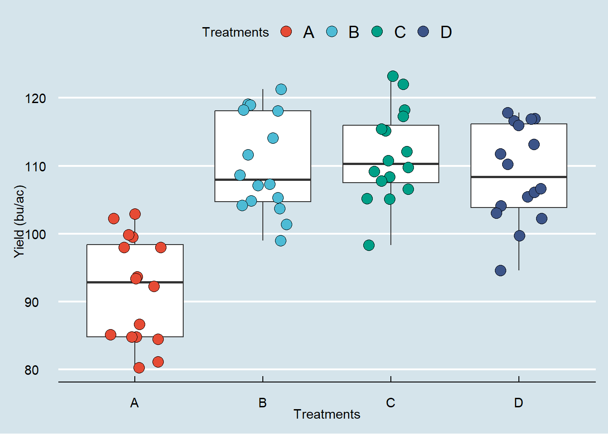
bbplot package
bbplot is a package developed by the BBC team.
# This package is not yet in the CRAN, so we need to download from a website called GitHub
# to do this, we need the package 'devtools', if you don't have it, make sure that you run both lines
# install.packages('devtools')
# devtools::install_github('bbc/bbplot')
library(bbplot)
ggplot(data = data_demo, aes(x = trt, y = yld)) +
geom_boxplot(outlier.alpha = 0)+
geom_jitter(aes(fill = trt), shape = 21, width = 0.2, size = 4)+
scale_fill_npg() +
labs(y = "Yield (bu/ac)", x = "Treatments", fill = "Treatments")+
# only enter with the theme name
bbc_style()## Warning in grid.Call(C_stringMetric, as.graphicsAnnot(x$label)): font family not
## found in Windows font database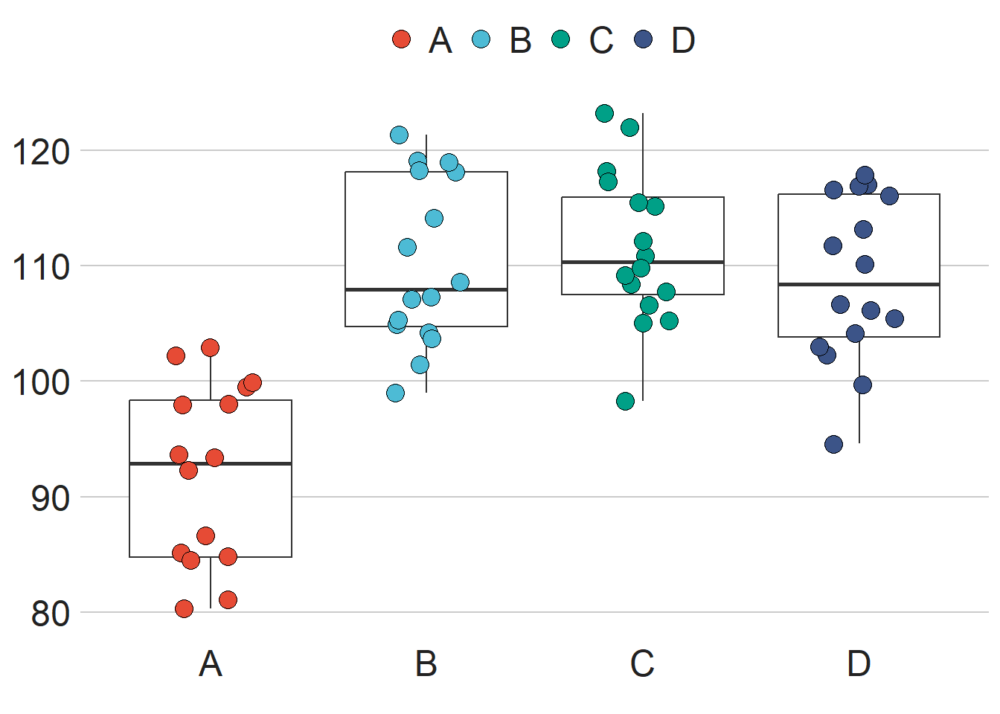
Customized
Another option is to not use the built-in themes and customize the
plots ourselves. ggplot2 has a lot of
options for customization, from the legend position to the ticks
size. As you can imagine, it would be difficult to cover each of these
options, but we will illustrate a few examples.
Let’s start with a plain plot where we modify a few elements, such as the legend, strip text, axis text and title
# This is the default theme
ggplot(data = data_demo, aes(x = trt, y = yld)) +
geom_boxplot(outlier.alpha = 0)+
geom_jitter(aes(fill = trt), shape = 21, width = 0.2, size = 4)+
scale_fill_npg() +
facet_grid(~var, labeller = labeller(var = c("R" = "Resistent", "S" = "Susceptible")))+
labs(y = "Yield (bu/ac)", x = "Treatments", fill = "Treatments") +
theme(
# theme function is empty, so will plot the default theme
)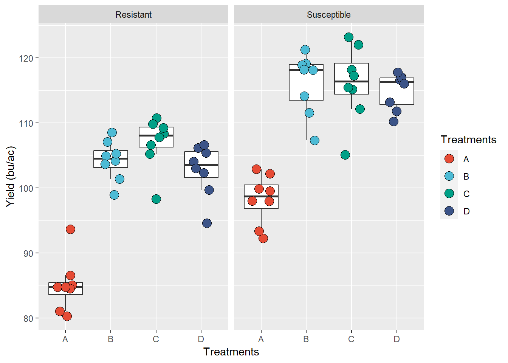
# This is the default theme
ggplot(data = data_demo, aes(x = trt, y = yld)) +
geom_boxplot(outlier.alpha = 0)+
geom_jitter(aes(fill = trt), shape = 21, width = 0.2, size = 4)+
scale_fill_npg() +
facet_grid(~var, labeller = labeller(var = c("R" = "Resistent", "S" = "Susceptible")))+
labs(y = "Yield (bu/ac)", fill = "Treatments",
x = NULL) + # we suppress the x-axis title, since it will be in the legend
theme(
# change the background color to white
panel.background = element_blank() ,
# the default color is white, so we have to change to gray to be different from the background
panel.grid.major = element_line(colour = "grey88"),
# the default theme does not have a border
panel.border = element_rect(colour = "grey80", fill = NA),
# axis text to black (was a little gray)
axis.text.y = element_text(colour = "black"),
#suppress the x-axis text, since it will be in the legend
axis.text.x = element_blank(),
# Change titles (y-axis and legend[fill]) to black text, size 12, and bold
title = element_text(colour = "black", size = 12, face = "bold"),
# bring the legend to inside of the plot
legend.position = c(0.90, .20),
# Legend key was gray, change to white
legend.key = element_rect(fill = "white"),
# Legend text attribute
legend.text = element_text(colour = "black", size = 12),
# Strip text justified almost completely to the left - (hjust = 0.01)
# hjust = 0.5 is center justification, and hjust = 1 is right justification
strip.text.x = element_text(hjust =0.01, face = "bold", size = 14),
# strip text background
strip.background = element_blank())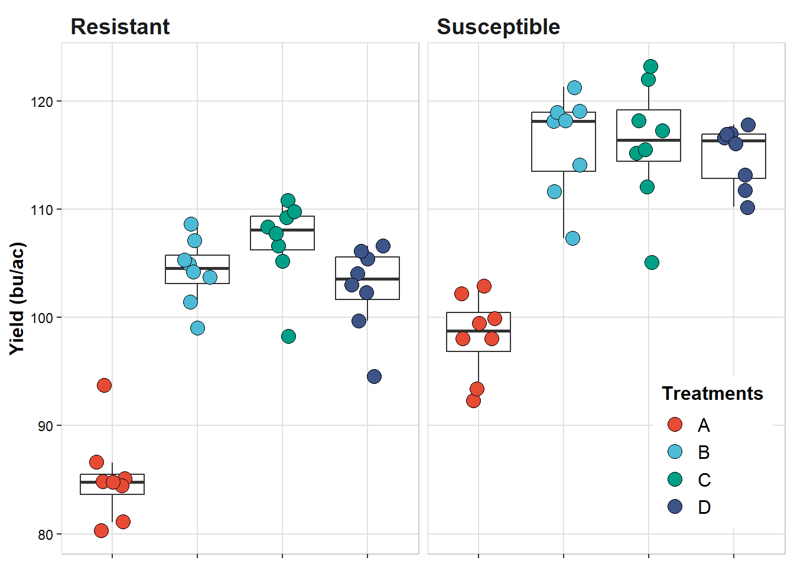
Combine plots
Frequently, we need to combine multiple plots into a single one. While many people copy and paste their plots in a MS Power Point (or similar software) and save as new plot, this approach is very inefficient, compromises quality, and may cause unintentional errors.
A better approach is combine these plots in single one and save.
There are a few good packages that can help with this task, including,
gridExtra,
cowplot,
and ggpubr,
but we will explore a new package, and arguably easier one, called patchwork.
First, let’s build some plots to be combined using
patchwork. We will build four plots, considering the effect
of treatment on the following variables: yield, severity, incidence, and
FDK.
# plots not display to save space (will be in the combined plot)
plot_yield <-
ggplot(data = data_demo, aes(x = trt, y = yld)) +
geom_boxplot(outlier.alpha = 0)+
geom_jitter(aes(fill = trt), shape = 21, width = 0.2, size = 4)+
scale_fill_npg() +
labs(y = "Yield (bu/ac)", x = NULL)+
theme(
axis.text = element_text(colour = "black"),
title = element_text(colour = "black", size = 12, face = "bold"),
legend.position = "none")
plot_sev <-
ggplot(data = data_demo, aes(x = trt, y = sev)) +
geom_boxplot(outlier.alpha = 0)+
geom_jitter(aes(fill = trt), shape = 21, width = 0.2, size = 4)+
scale_fill_npg() +
labs(y = "Severity (%)", x = NULL)+
theme(
axis.text = element_text(colour = "black"),
title = element_text(colour = "black", size = 12, face = "bold"),
legend.position = "none")
plot_inc <-
ggplot(data = data_demo, aes(x = trt, y = inc)) +
geom_boxplot(outlier.alpha = 0)+
geom_jitter(aes(fill = trt), shape = 21, width = 0.2, size = 4)+
scale_fill_npg() +
labs(y = "Incidence (%)", x = NULL)+
theme(
axis.text = element_text(colour = "black"),
title = element_text(colour = "black", size = 12, face = "bold"),
legend.position = "none")
plot_fdk <-
ggplot(data = data_demo, aes(x = trt, y = fdk)) +
geom_boxplot(outlier.alpha = 0)+
geom_jitter(aes(fill = trt), shape = 21, width = 0.2, size = 4)+
scale_fill_npg() +
labs(y = "FDK (%)", x = NULL)+
theme(
axis.text = element_text(colour = "black"),
title = element_text(colour = "black", size = 12, face = "bold"),
legend.position = "none")library(patchwork)
# just use the "+" signal to combine the plots
plot_yield+plot_sev
# or the "/" to put one on top of the other
plot_yield/plot_sev# use "()" to create a hierarchical order of combinations
(plot_yield+plot_sev) / # first combine yield and severity, followed by stacking incidence and fdk
(plot_inc + plot_fdk)## Warning: Removed 2 rows containing non-finite values (stat_boxplot).## Warning: Removed 2 rows containing missing values (geom_point).And, we can add tags and make changes to the plot’s overall theme
# use "()" to create a hierarchical order of combinations
(plot_yield+plot_sev) / # first combine yield and severity, followed by stacking incidence and fdk
(plot_inc + plot_fdk) +
# add a tag for each plot, there way to customize this
plot_annotation(tag_levels = "A") & # very important, use "&" to make theme changes
theme(
axis.text.x = element_text(colour = "red")) # red to make an obvious change## Warning: Removed 2 rows containing non-finite values (stat_boxplot).## Warning: Removed 2 rows containing missing values (geom_point).Saving plots
We can use the the function ggsave to save a plot.
ggsave(plot = plot_yield, # name of the plot in R
filename = "figures/intro_r/example1.png", # plot will be saved in the folder figures, with name example1, format png
width = 85, height = 80, units = "mm", # plot dimension
dpi = 450 ) # resolutionAnd below is how our saved plot looks (it is the upload version of the plot)

Plot saved in the computer and upload to this document
Note how the “saved plot” is different from the one printed in R. This is because we force our “saved plot” to have a specific dimension, which may be different than the dimension which our screen has. When this happens, if necessary, make the appropriated changes (change point size, text size, etc)
plot_yield